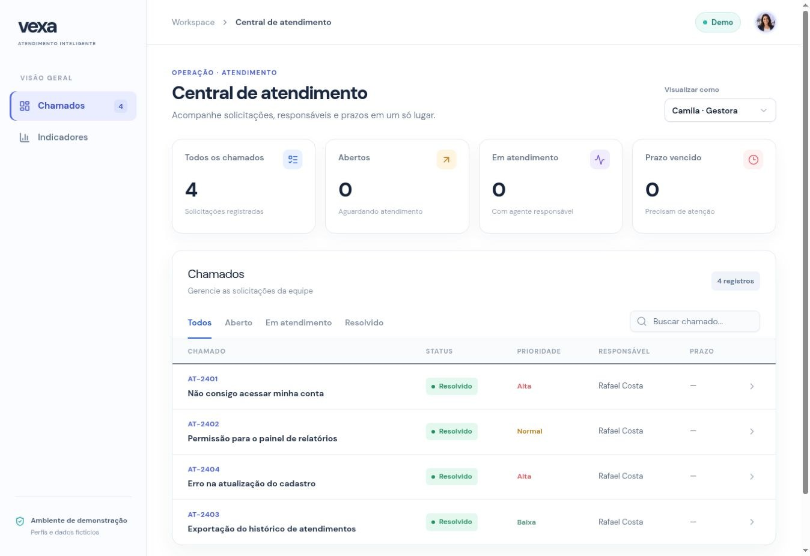
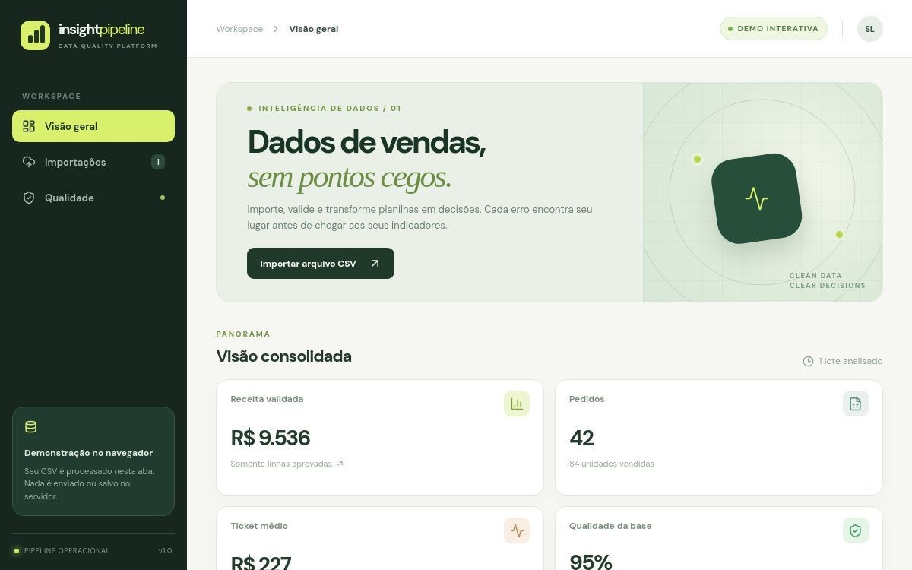
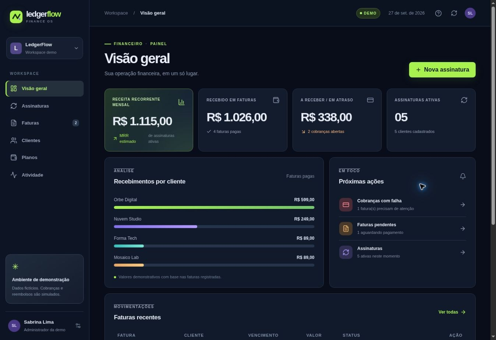
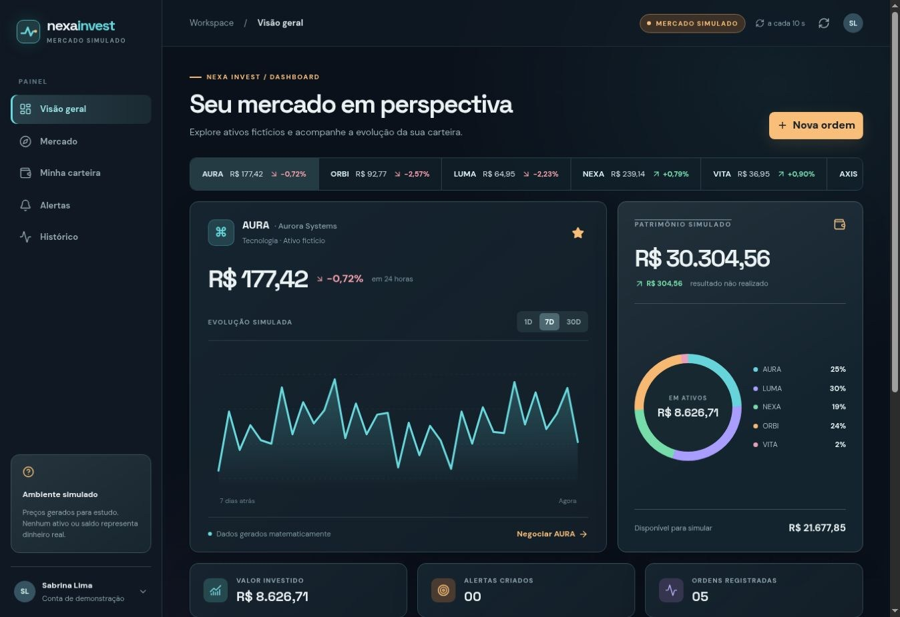
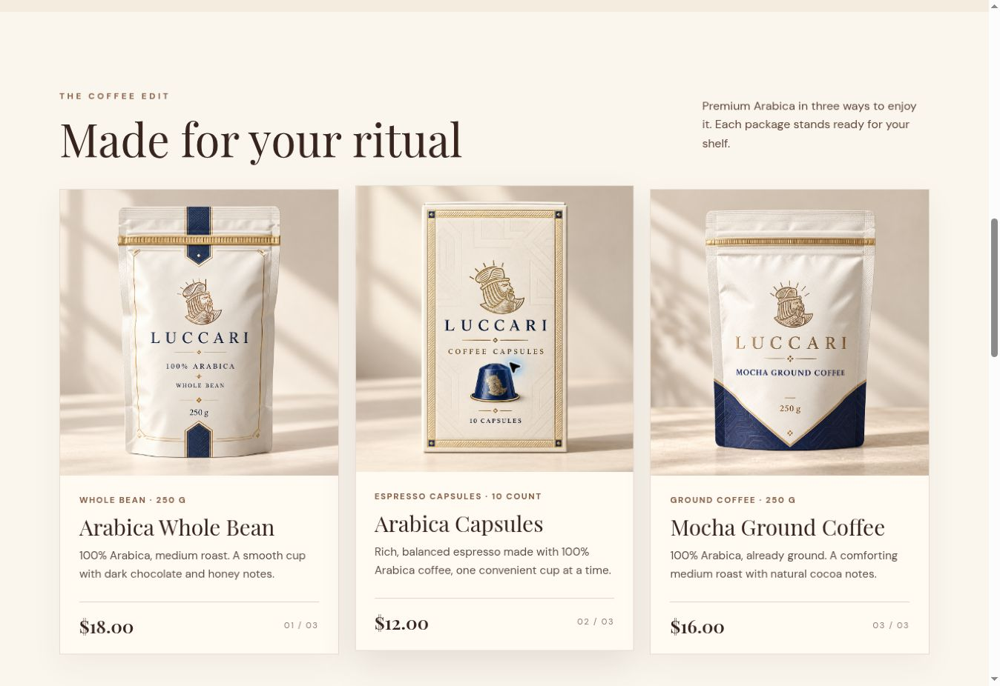
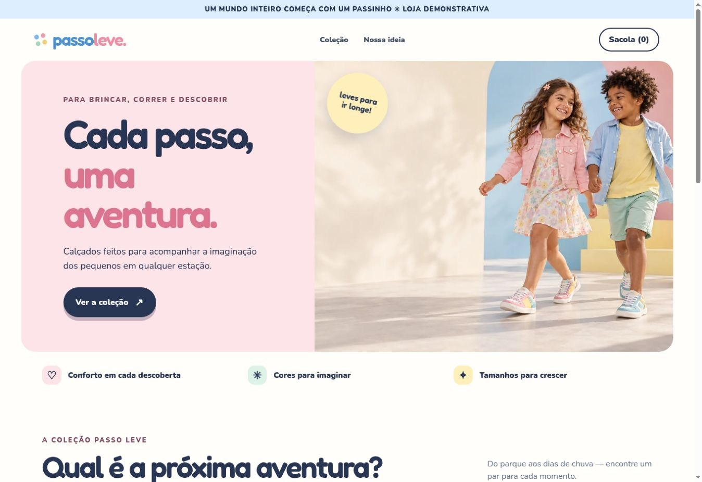
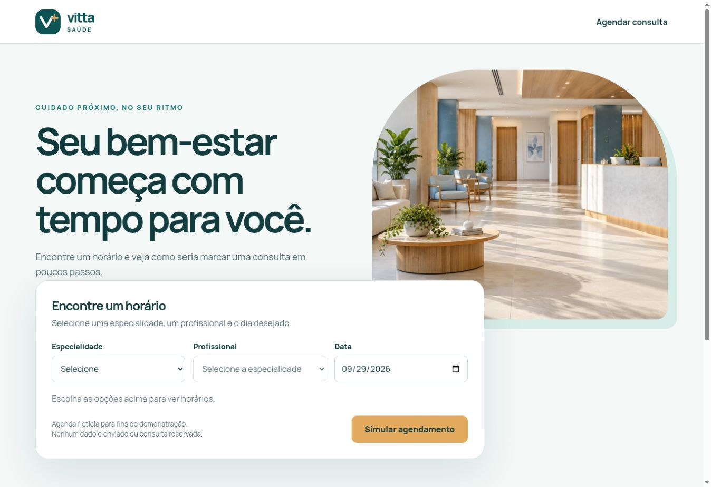
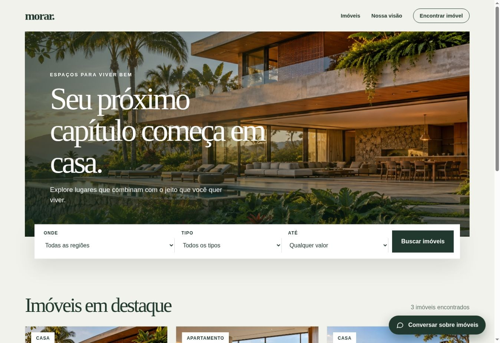

01 / PRODUTO DIGITALVexa
Central de atendimento para acompanhar chamados, responsáveis, prazos e histórico em uma só interface.
Stack React · TypeScript · Next.js · D1
OLÁ, EU SOU A SABRINA
Desenvolvo interfaces e produtos digitais, do HTML, CSS e JavaScript a aplicações com React, TypeScript, APIs e dados. Conheça abaixo o que foi usado em cada projeto.
01 / TRABALHOS SELECIONADOS
Oito projetos demonstrativos, de ferramentas de gestão a experiências de compra e serviços.

01 / PRODUTO DIGITALCentral de atendimento para acompanhar chamados, responsáveis, prazos e histórico em uma só interface.
Stack React · TypeScript · Next.js · D1

02 / PRODUTO DIGITALImportação e validação de planilhas CSV com indicadores de vendas e atenção à qualidade dos dados.
Stack React · TypeScript · Python/FastAPI · PostgreSQL

03 / PRODUTO DIGITALWorkspace demonstrativo para visualizar assinaturas, faturas, clientes e receita recorrente.
Stack React · TypeScript · Next.js · D1

04 / PRODUTO DIGITALCarteira simulada e monitor de mercado para explorar informações e cenários de investimento.
Stack React · TypeScript · Next.js · D1

05 / SITE & MARCABoutique de café com catálogo de grãos, moído, cápsulas e três bebidas prontas, em inglês e com preços em dólares.
Stack HTML · CSS · JavaScript

06 / SITE & MARCALoja infantil demonstrativa com catálogo, filtros, seleção de tamanhos e sacola de compras.
Stack HTML · CSS · JavaScript

07 / SITE & MARCAAgendamento fictício de consultas com escolha de especialidade, profissional, data e horário.
Stack HTML · CSS · JavaScript

08 / SITE & MARCACatálogo demonstrativo de imóveis com apresentação visual, filtros e contato com corretores.
Stack HTML · CSS · JavaScript
Projetos de portfólio com marcas e dados fictícios. As interações demonstram conceitos e não realizam transações ou atendimentos reais.
02 / SOBRE MIM
Sou Sabrina Lima. Gosto de transformar ideias em experiências digitais fáceis de entender e agradáveis de usar.
Nestes projetos, explorei diferentes contextos: atendimento, dados, finanças, comércio, saúde e imóveis. Cada interface é uma oportunidade de aprender, experimentar e melhorar.
Voltar aos projetos